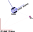

Move To
The idea here is to develop a move strategy to permits a robot to reach positions successively, in a cluttered environment.
To do that, the node subscribes to a topic goals to get in a position to reach.
The main difficulty here, consists in following positioning kwoledge of the goals while the robot is moving.
Record a goal position
It supposes that you play with at least 2 frames. A local frame is attached to the robot and is moving with it. A global frame permits to localize the goal at a fixed position in the environement and the robot (i.e. the local frame). It supposes that your global frame is fixed in the environment.

Classically, we use the map frame for global referring system, but without map it is possible to use the odom (from robot odometer).
The robot is defined with different frame: base_link at the gravity center of the robot. base_footprint as a projection of base_link on the floor.
Understand frame and transformations
By starting any sensor as the laser, the publishing data is in its own frame.
It would be impossible for rviz2 to display the laser information into map frame (fixed frame).
The map and laser frames are independent.
In rviz, connect to scan topic, normaly nothing appears. Try by modifying the global frame with the frame of the laser.
Transform tools
The package tf2_tools provides with a process that generates a graph of the connection between the frames.
#third console
ros2 run tf2_tools view_frames.py
evince frames.pdf
In ROS tf stand for transformation.
It is a central tool permitting getting space-temporal information from a frame to another.
It supposes that specific messages are published into dedicated topic tf.
At this step, no transform are published...
It is possible to generate a static transformation (it supposes that the laser is fixed in the environment at a specific position)
ros2 run tf2_ros static_transform_publisher 0 0 0 0 0 0 1 "map" "laser"
You can validate with view_frame that the 2 frames ares connected and that laser scan are displayed in rviz.
The first 3 numbers fix the translation.
It is the potion of the laser center into map. The next 4 numbers give the rotation.
In fact, the publisher generates a TransfromStamped mesage and the rotation is based on quaternion definition (cf. wikipedia for details...)
Display the frames in rviz2 (add > axes > set reference frame) and play with different configurations (kill and restart the static_transform_publisher).
tbot configuration
For a simple robot, it can be dozens of frames and it grows with robot parts (legs, arms).
ROS provide a tool (state publisher) to publish transform regarding how the frames are interconnected.
The tbot launch file of the tbot_start package already started state publisher based on a description of the tbot (kobuki robot in IMT Nord Europe configuration, already on pibot).
Connect the robot (via the ROS_DOMAIN_ID) and Generate the frame graph (view_frame).
In basic configuration, the robot provides a first pose estimation in global odom frame (ie. transformation between odom and base_link).
So set the fixed frame in rviz on odom, the laser scans appear.
Connect to tf topic and all the frame axis appear too.
- Oficial documentation about tf2: docs.ros.org.
Bonus: it is possible to visualize the robot in rviz2: add > robot description (select the appropriate topic).
Transform a pose in a specific frame.
Naturally, ROS also provide C++ and Python library to manipulate transformation and permits developers to get pose coordinate from a frame to another.
The idea is to a declare a tf2 listener, an object that will subscribe to transform topics and maintain transformation data. Then it is possible to recompute pose coordinates in any connected frames.
More on : wiki.ros.org.
The idea in our context is to develop a node localGoal that will remember a pose in a global frame and publish at a given frequence the pose in another local frame.
For our new node, we have to declare the elements permitting the node to listen and keep the transformation available, a listerner and a buffer.
# Transform tool (suppose that ros2 is initialized):
tf_buffer = tf2_ros.Buffer()
tf_listener = tf2_ros.TransformListener( tf_buffer )
...
Do not forget to import tf2_ros into your script and to add the reference into the package dependencies (package.xml).
We can now address the interesting question: How to transform a position defined into a frame in another frame ? It consists in building a Transform object from the reference and target frames. While a listener was declared on a transform buffer, it is possible to create this object from that tool (if exist).
The Transform object is generated with the method lookup_transform(target_frame, reference_frame, time).
This method gets a target_frame (the frame id in which we want the pose) a reference_frame (the frame id in which the pose is currently defined) and a time.
In fact, the transformations are dynamically.
The position and orientation of elements (the robot(s), robot parts, ...) change continuously and it is possible to get transformation in the present or in the past.
To get the current transformation a node.time.Time() permits to get the current time.
The lookup is not guaranteed to achieve. It can fail in case of a gap in the transforms or obsolete transforms. In case of fail, an exception is thrown accordingly the python exception manager (more on w3schools).
Finally, inside our publish_goal call back, getting a transform will look like:
def publish_goal(self):
currentTime= rclpy.time.Time()
# Get Transformation (import poses referenced in odom into base_link)
try:
stampedTransform= self.tf_buffer.lookup_transform(
'base_link',
'odom',
currentTime)
except (tf2_ros.LookupException, tf2_ros.ConnectivityException, tf2_ros.ExtrapolationException):TransformException as tex:
self._node.get_logger().info( f"Could not transform poses from 'odom' into 'base_link': {tex}")
return
...
The transform is a stamped transform (ie. defined in a given time) defined by geometry_msgs package.
The pose transformation is already defined in a ros method of tf2_geometry_msgs package and it require the installation of python3-tf2-geometry-msgs(things are never simple in ros...):
sudo apt update
sudo apt install python3-tf2-geometry-msgs
def publish_goal(self):
...
# Compute goal into local coordinates
myGoalPoseInBaseLink = tf2_geometry_msgs.do_transform_pose(
myGoalPoseInOdom,
stampedTransform
)
...
Permit Autonomous Navigation
The goal poses itself is not interesting. The objective now is to include this code into the reactive move node in order to permits the robot to reach a decided destination, by avoiding obstacles.
- Get the goal pose from a topic pose (a pose can be published with rviz).
- Convert the received goal pose into a global frame (
odom). - Control the robot to reach the goal (the control is in the local frame)
- Stop the robot if it is close enough to the position.
Going Further - Path following
Rather than a unique pose, it could be interesting to define a succession of pose to follow (a path). That for the reactive move has to manage a list of pose and switch from a pose to the next one each time it is expected.